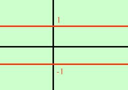

Attenzione: per poter parlare di continuita' o discontinuita' bisogna
poter parlare di limite:

ad esempio secondo voi la funzione
1 se x e' razionale
y=
-1 se x e' reale non razionale
che tipo di discontinuita' ha?
Nessuno, infatti non puo' ammettere limite in nessuno dei suoi punti:
l'intervallo sulle y non si stringe